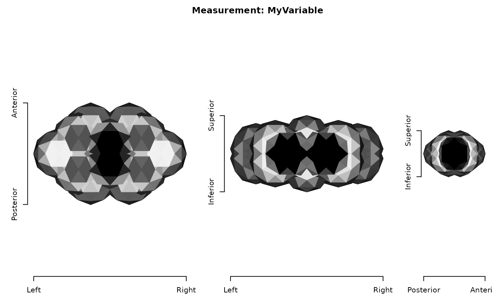
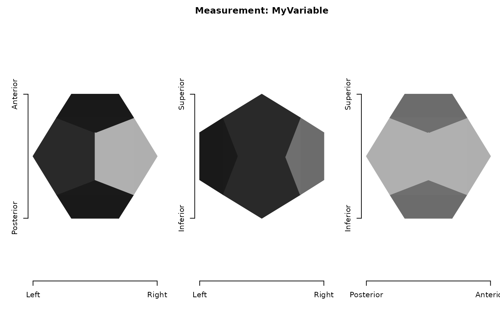
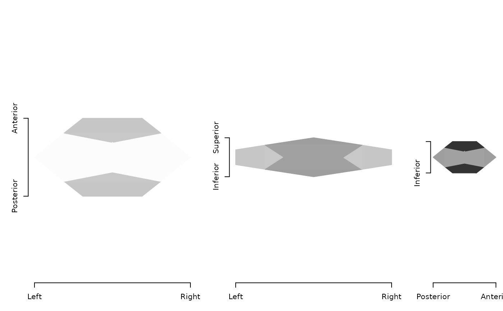
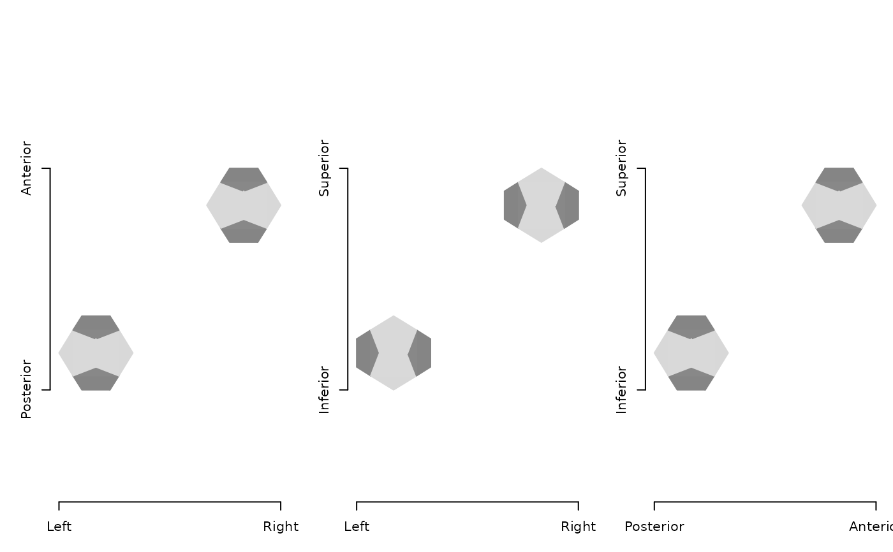
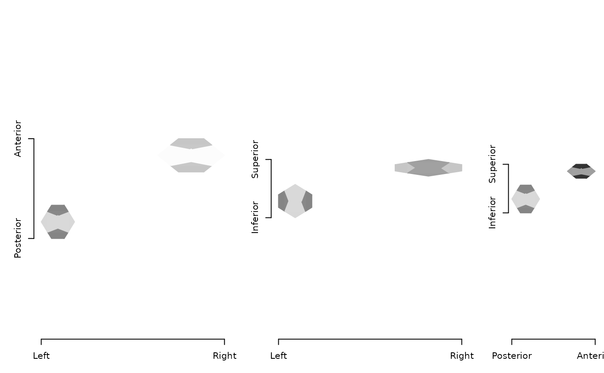

Either merge surface objects by attributes or merge geometries
Arguments
- x, y, ...
'ieegio'surface objects, seeas_ieegio_surfaceorread_surface. Objectxmust contain geometry information.- merge_type
type of merge:
"attribute"merge
y,...into x by attributes such as color, measurements, annotations, or time-series data, assumingx,y,...all refer to the same geometry, hence the underlying number of vertices should be the same."geometry"merge
y,...into x by geometry; this requires the surfaces to merge have geometries and cannot be only surface attributes. Two mesh objects will be merged into one, and face index will be re-calculated. The merge happens in transformed space, Notice the attributes will be ignored and eventually discarded during merge.
- merge_space
space to merge the geometries; only used when
merge_typeis"geometry". Default is to directly merge the surfaces in"model"space, i.e. assuming the surfaces share the same transform; alternatively, if the model to world transforms are different, users can choose to merge in"world"space, then all the surfaces will be transformed into world space and mapped back to the model space inx- transform_index
which local-to-world transform to use when merging geometries in the world space; default is the first transform for each surface object. The transform list can be obtained from
surface$geometry$transformsandtransform_indexindicates the index of the transform matrices. The length oftransform_indexcan be either 1 (same for all surfaces) or the length of all the surfaces, (i.e. length oflist(x,y,...)), when the index needs to be set for each surface respectively. If any index is set toNA, then it means no transform is to be applied and that surface will be merged assuming its model space is the world space.- verbose
whether to verbose the messages
Examples
# Construct example geometry
dodecahedron_vert <- matrix(
ncol = 3, byrow = TRUE,
c(-0.62, -0.62, -0.62, 0.62, -0.62, -0.62, -0.62, 0.62, -0.62,
0.62, 0.62, -0.62, -0.62, -0.62, 0.62, 0.62, -0.62, 0.62,
-0.62, 0.62, 0.62, 0.62, 0.62, 0.62, 0.00, -0.38, 1.00,
0.00, 0.38, 1.00, 0.00, -0.38, -1.00, 0.00, 0.38, -1.00,
-0.38, 1.00, 0.00, 0.38, 1.00, 0.00, -0.38, -1.00, 0.00,
0.38, -1.00, 0.00, 1.00, 0.00, -0.38, 1.00, 0.00, 0.38,
-1.00, 0.00, -0.38, -1.00, 0.00, 0.38)
)
dodecahedron_face <- matrix(
ncol = 3L, byrow = TRUE,
c(1, 11, 2, 1, 2, 16, 1, 16, 15, 1, 15, 5, 1, 5, 20, 1, 20, 19,
1, 19, 3, 1, 3, 12, 1, 12, 11, 2, 11, 12, 2, 12, 4, 2, 4, 17,
2, 17, 18, 2, 18, 6, 2, 6, 16, 3, 13, 14, 3, 14, 4, 3, 4, 12,
3, 19, 20, 3, 20, 7, 3, 7, 13, 4, 14, 8, 4, 8, 18, 4, 18, 17,
5, 9, 10, 5, 10, 7, 5, 7, 20, 5, 15, 16, 5, 16, 6, 5, 6, 9,
6, 18, 8, 6, 8, 10, 6, 10, 9, 7, 10, 8, 7, 8, 14, 7, 14, 13)
)
x0 <- as_ieegio_surface(dodecahedron_vert, faces = dodecahedron_face)
plot(x0)
 # ---- merge by attributes -----------------------------------
# point-cloud but with vertex measurements
y1 <- as_ieegio_surface(
dodecahedron_vert,
measurements = data.frame(MyVariable = dodecahedron_vert[, 1]),
transform = diag(c(2,1,0.5,1))
)
plot(y1)
# ---- merge by attributes -----------------------------------
# point-cloud but with vertex measurements
y1 <- as_ieegio_surface(
dodecahedron_vert,
measurements = data.frame(MyVariable = dodecahedron_vert[, 1]),
transform = diag(c(2,1,0.5,1))
)
plot(y1)

# the geometry of `y1` will be discarded and only attributes
# (in this case, measurements:MyVariable) will be merged to `x`
z1 <- merge(x0, y1, merge_type = "attribute")
#> Merging geometry attributes, assuming all the surface objects have the same number of vertices.
plot(z1)

# ---- merge by geometry ----------------------------------------
y2 <- as_ieegio_surface(
dodecahedron_vert + 4, faces = dodecahedron_face,
transform = diag(c(2, 1, 0.5, 1))
)
plot(y2)

# merge directly in model space: transform matrix of `y2` will be ignored
z2 <- merge(x0, y2, merge_type = "geometry", merge_space = "model")
#> Merging geometries directly without checking transforms (assuming the transforms are the same)
plot(z2)

# merge x, y2 in the world space where transforms will be respected
z3 <- merge(x0, y2, merge_type = "geometry", merge_space = "world")
#> Merging geometries in the transformed world space indicated by `transform_index` list.
plot(z3)
